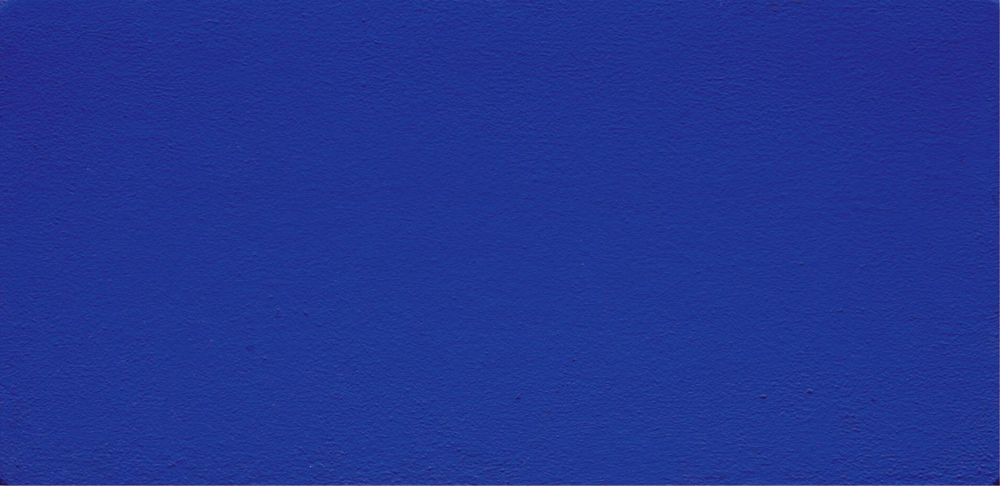
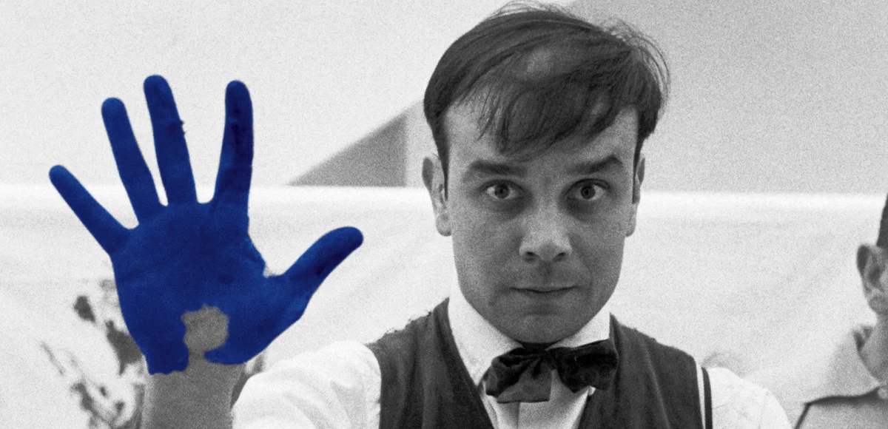
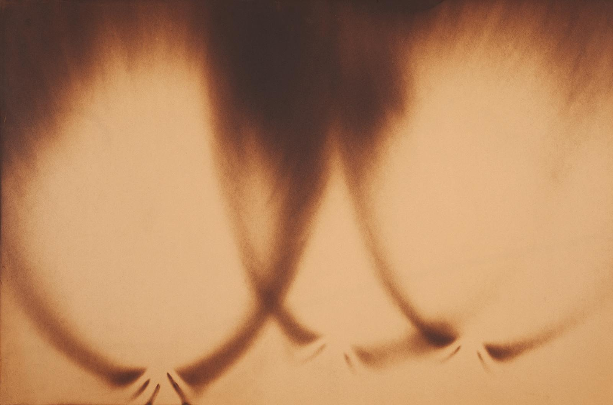
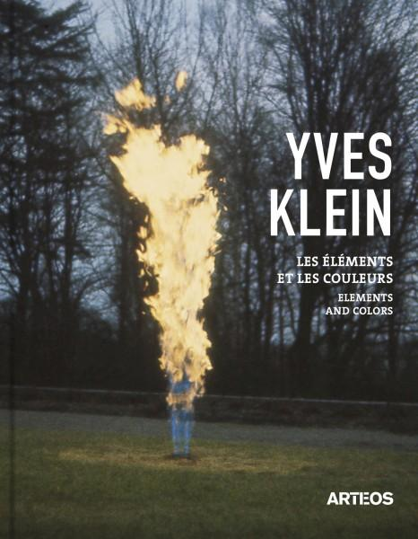

-
TITRE :
Monochrome bleu -
RÉFÉRENCE :
IKB 120 -
TECHNIQUE :
Pigment pur et résine synthétique
sur gaze montée sur panneau

Klein famously declared the blue sky to be his first artwork and from there continued finding radical new ways to represent the infinite and immaterial in his works.
One such strategy was monochrome abstraction—the use of one color over an entire canvas.
Klein saw monochrome painting as an “open window to freedom, as the possibility of being immersed in the immeasurable existence of color.”
Although he used a range of colors, his most iconic works often featured International Klein Blue,
a shade of pure ultramarine that Klein claimed to have invented and trademarked.
He used materials like water, fire, and air to construct his works and staged a “leap into the void” for a self-published newspaper.

-
TITRE :
"The Heartbeat of France" -
LIEU :
Studio de Charles Wilp -
AUTEUR :
Charles Wilp
Portrait d'Yves Klein réalisé à l'occasion du tournage de Peter Morley "The Heartbeat of France" N.B. La photographie originale est en noir et blanc.

-
TITRE :
Peinture de Feu sans titre -
RÉFÉRENCE :
F 35 -
TECHNIQUE :
Carton brûlé
Le feu est pour moi l’avenir sans oublier le passé. Il est la mémoire de la nature. (...) Il est douceur, le feu « est douceur et torture. Il est cuisine et apocalypse.
Il est plaisir pour l’enfant assis sagement près du foyer ; il punit cependant de toute désobéissance quand on veut jouer de trop près avec ses flammes. Il est bien-être et respect.
C’est un dieu tutélaire et terrible, bon et mauvais. Il peut se contredire : il est donc un des principes d’explication universelle.
On n’a peut-être pas assez remarqué que le feu est plutôt un être social qu’un être naturel, et, pour voir le bien fondé de cette remarque, il n’est pas besoin de développer les considérations sur le rôle du feu dans les sociétés primitives ni d’insister sur les difficultés techniques de l’entretien du feu ; il suffit de faire de la psychologie positive, en examinant la structure et l’éducation d’un esprit civilisé. En bref, le respect du feu est un respect enseigné ; ce n’est pas un respect naturel.
Le réflexe qui nous fait retirer le doigt de la flamme d’une bougie ne joue pour ainsi dire aucun rôle conscient dans notre connaissance.» D’autre part, on ne peut, je pense, discuter du point de vue perfection esthétique la qualité du feu. Le feu est beau en soi, n’importe comment
Yves Klein, extrait de "Conférence de la Sorbonne », 3 juin 1959

-
TITRE :
Les éléments et les couleurs -
ÉDITEUR :
Arteos -
LIEU :
Paris, France
Tel un météore de lumière, Yves Klein n'a cessé de poursuivre "la trace de l'immédiat dans les objets naturels, quelle qu'en soit l'incidence" comme il l'écrivait en 1961 dans le Manifeste de l'Hôtel Chelsea.
"Peintre de l'espace" et "explorateur du vide", il a fait de l'utopie l'un des fondements de son art. Pour lui, les quatre éléments que sont la terre, l'eau, l'air et le feu sont des sources essentielles de l'art et la couleur en est le révélateur.
Ce livre, réunit les Cosmogonies, les Feux, les Feux Couleurs, les Reliefs Planétaires, les Monochromes, l'Architecture de l'air et les œuvres immatérielles.
À la lumière des écrits de l'artiste, il présente la pensée d"Yves le Monochrome"
qui en renouant avec les concepts antiques de nature et de cosmos réalise le "vieux rêves des hommes et de l'imagination de jouer avec les éléments de la nature, de diriger et de contrôler leurs phénomènes et manifestations".